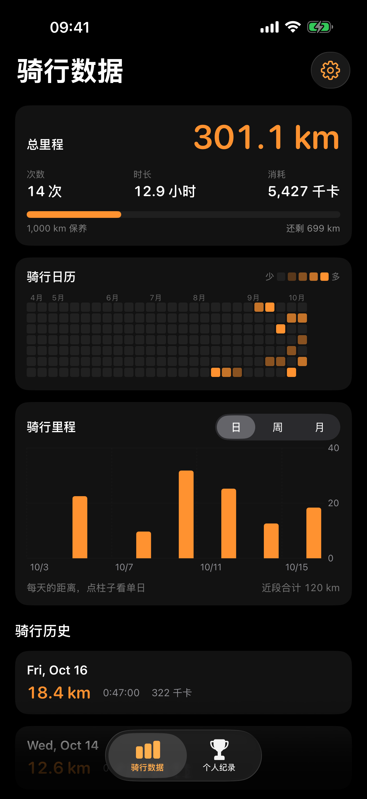
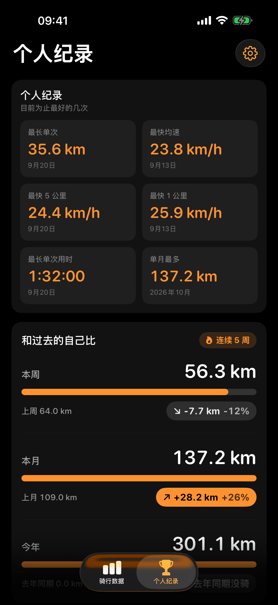

手表或 iPhone 记下的骑行训练，都汇到这里。原始数据一直在苹果健康里，咕咕只读不写，专心把数字摆清楚。
把数字摆出来只是开始。最好的一次、最快的一段、比过去进步了多少，打开就能看到自己一直在往前走。
记录交给手表和 iPhone，咕咕只负责读出来、摆清楚，绝不写入一个字节。
不做码表，不做社交，把一件事做好：让你看清自己的骑行数据。
原始记录都在苹果健康里，咕咕自己不存原始数据，删掉缓存也只是重新算一遍。你的数据属于你。
永久不出现广告，也不卖货。软件是你的工具，不是别人的货架。
代码公开，欢迎学习和自建。仅限非商业用途。
能用苹果就苹果：日历像日历，图表像图表。不重新发明系统已经做好的东西。